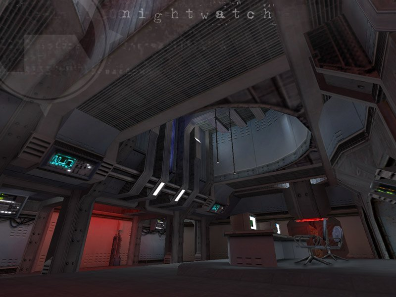
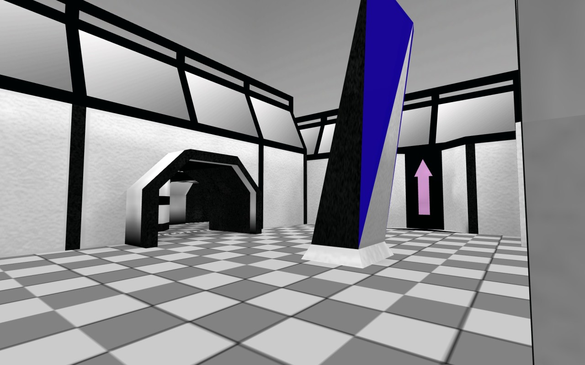
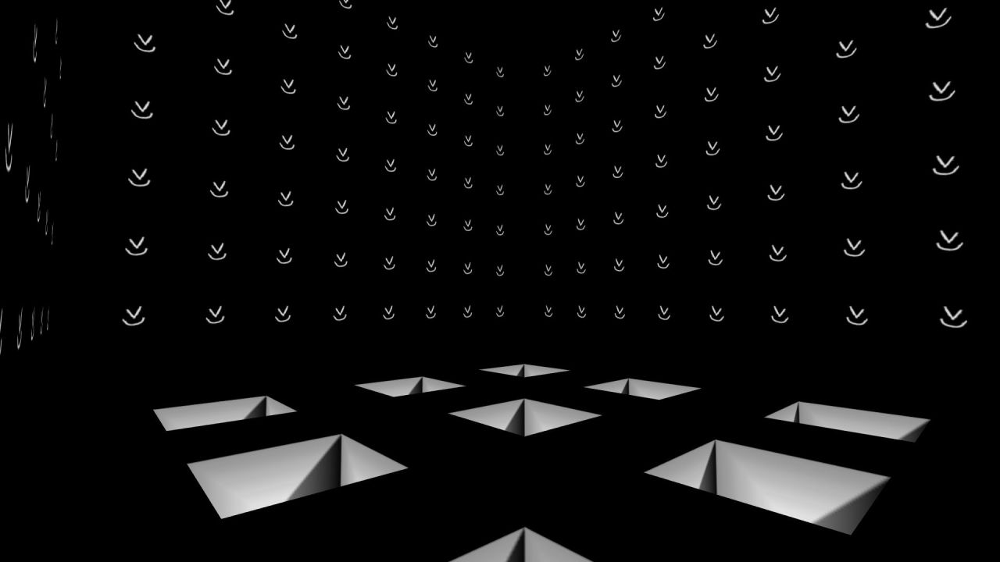
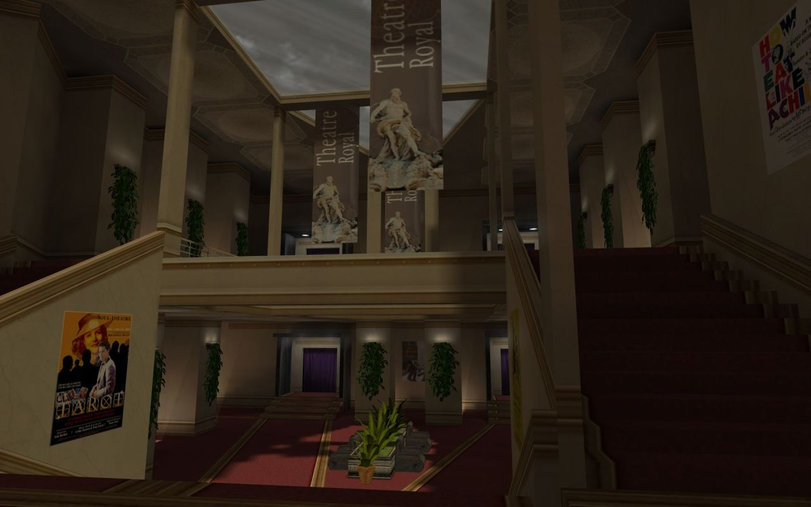
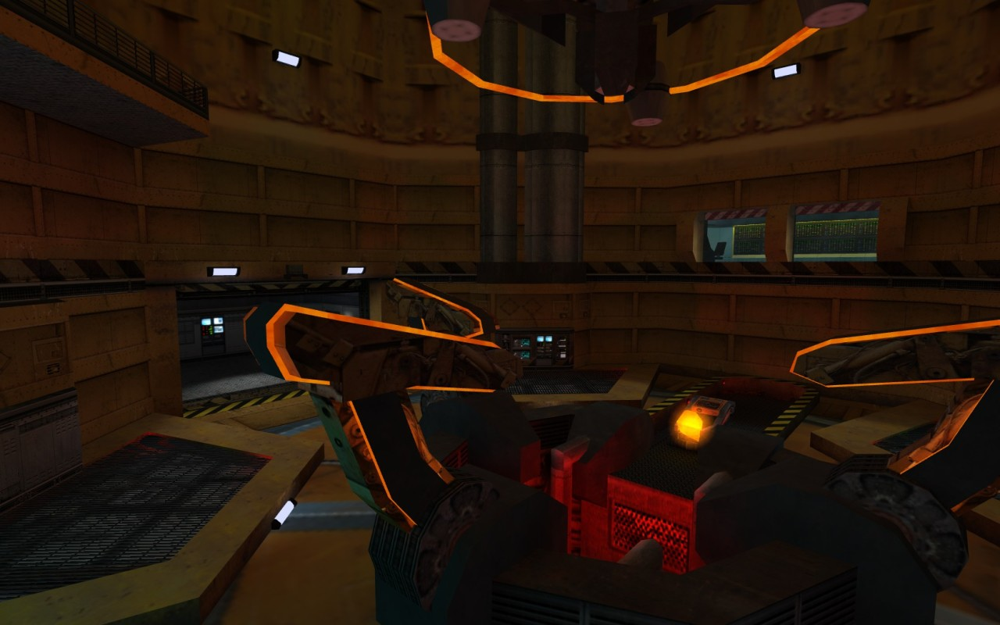
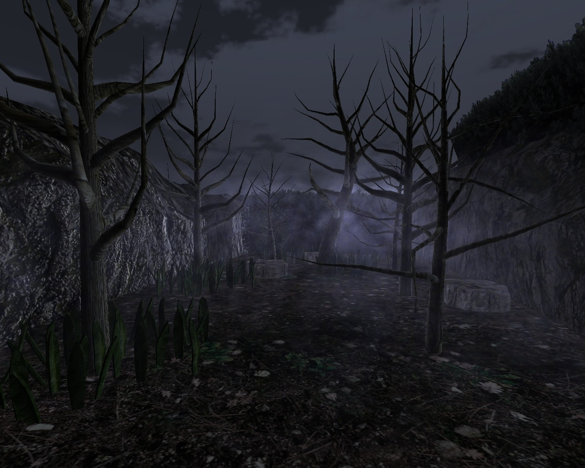
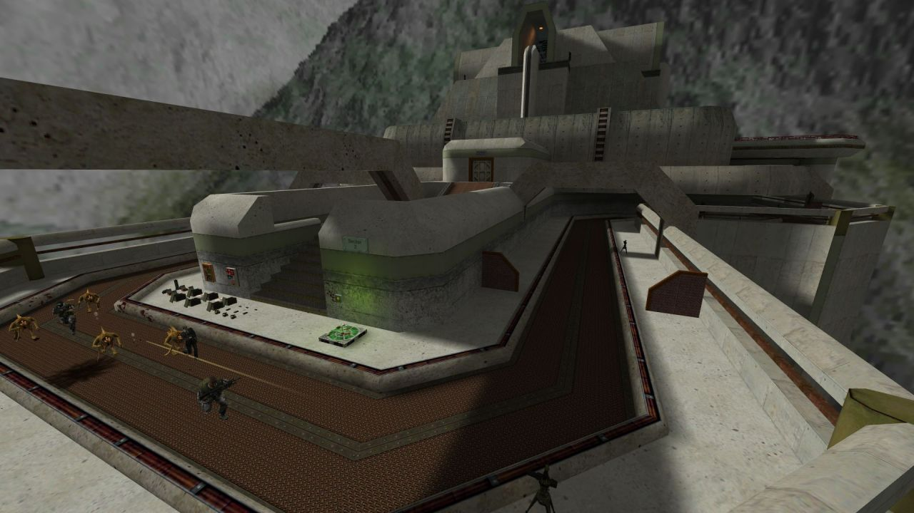
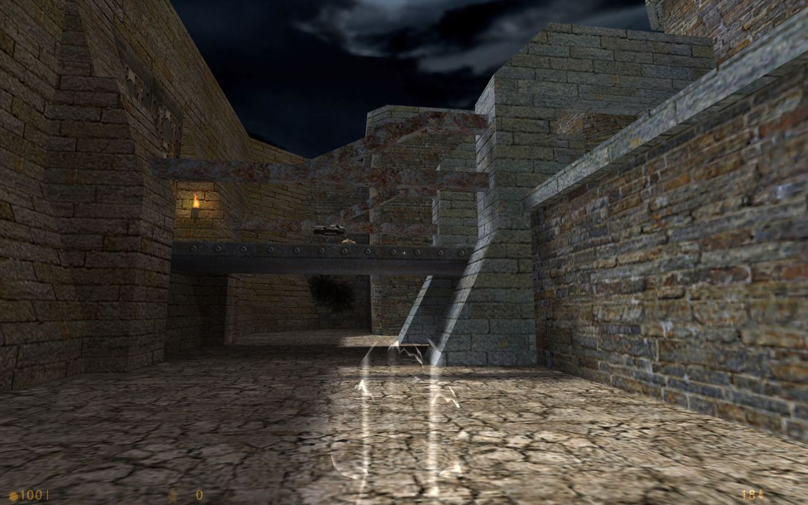

Half-Life: Nightwatch (unreleased)
Black Mesa Military Security Guard
Half-Life: Nightwatch (unreleased)
Black Mesa Military Security Guard
Half-Life: Nightwatch (unreleased)
Nightwatch Hazard Course
Date: Irrelevant
Time: 8:47 AM Mountain Standard Time
Location: Black Mesa Research Facility, Sector D Facility Integrity Control
Subject: William Archer, BMRF Military Security ForceDuring the day, Black Mesa is a hub of scientific, technological, and personal achievements. If one were to take a quick stroll through one of the many employee lounges throughout the facility, he would find scientists eagerly bubbling with information about all the latest non-classified tests he has been focusing on; they could easily be confused for small enthusiastic children if not for the crinkles under their eyes and tinges of grey forming on what hair (if any) they have left. Keeping a watchful eye over the research team is a powerful tag-team of Black Mesa Security and an on-site United States military facility.
During the nights, however, a third protective force emerges. Black Mesa Military Security serves as a nighttime security force representing the unholy union between BMS and the Marines. More benevolent than the trigger-happy Marines, but yet better trained with standard-issue military arms than the standard security force, MilSec officers effectively place the facility under lockdown at night. Only operating between Red Shift and Blue Shift, in what has come to be known as Black Shift, MilSec officers are the mostly invisible skeleton crew that holds the facility in place.
So the cycle goes on and on – the facility buzzes with activity during the day and sleeps in shadowed silence broken only by the footsteps of the MilSec officers who slowly patrol each and every perimeter.
That is, until a week ago.
The science team has become more apprehensive. Tension is on the rise, and BMS officers have been called in three times to subdue inter-scientist scuffles. The Marines have been performing more combat maneuvers than usual, and a surprising number of air insertion drills. Standard security officers find their clearance reduced, and even MS officers are finding certain areas in a lockdown that pre-empts even their authority. Unprecedented technical repairs and tweaks were in progress throughout the entire facility.
William Archer, assigned to Sector D Facility Integrity Control and MilSec Squad 4, normally wakes up to the setting sun burning harsh orange rays through his blinds. Yesterday afternoon, he was awakened by the sound of aircraft. He walked to the window and split a couple slats of the blinds. A most unusual sight fell before him – at least 10 Osprey aircraft, seemingly loaded almost to the point of overflow with Marines, slowly were gliding overhead. Escorting the landing aircraft was what seemed to be the facility’s entire fleet of attack helicopters. As the pulse of the rotor aircraft began to fade, a second sound grew in the background. The roar of afterburners shook the dormitory structure as a sharp delta of what looked like F-16 Falcons screamed into view, quickly overtaking the slower rotor aircraft. As he checked into his post later that night, he noticed a scrawled message taped to the armory door - “Military moved off-site. Squad 3 - extended hours. Take Blue Shift to 12:00 AM.” He almost overlooked the footnote: “All squads - Maintain full loadout. Shoot on sight authority in Sector C.”
It turned out that the entire Black Mesa Marine presence had been moved off-facility. Even the fighter aircraft had been sent airborne, which was becoming a more and more uncommon sight as time went on. There was no question, something big was going down.
Now, as Black Shift gives way to Blue Shift and MS officers step in to fill the mysterious void left by the sudden departure of the marine presence, all hell is breaking loose. Computers are failing, lifts are freezing, and scientists are just downright pissed off. As Archer makes his way to the tram system to try to forget the sudden apprehension, another young member of the Black Mesa staff is getting a late start to his day as his tram lumbers towards Sector C…
“The current time is 8:47 AM. Current topside temperature is 98 degrees…”

Half-Life: Nightwatch (unreleased)
Chapter 3 - Reciprocity

Half-Life: Nightwatch. A sprawling, ambitious Half-Life mod set
mostly in Black Mesa. But it is a Black Mesa that looks better than
we’ve ever seen it, perhaps on any engine. Made by a team of dozens, in
addition to the gorgeous levels it features new weapons, new music,
new characters and enemies.
Half-Life: Nightwatch, cancelled 9 years ago, July 12th, 2006. It remains unreleased.
The Good News:
stay tuned here at Goldsource Gold, because for the next couple weeks
I’ll take you on a journey that will show off what Nightwatch was and could have
been. I hope to do it justice.
It’ll be all the official screenshots I’ve been able to
collect over the years (close to 90 of them), other goodies collected
from the old Nightwatch site like music and background information, and a
couple nifty surprises. :)

blackwhite for BuzzyBots by TTJ

Halfquake Amen by muddasheep
http://www.runthinkshootlive.com/posts/half-quake-amen-half-life/
Man, this room was a barrel of bullshit!
Halfquake Amen by muddasheep
http://www.runthinkshootlive.com/posts/half-quake-amen-half-life/

ts_theatre for The Specialists by X-Tender

Ramshackle for The Wastes by Matti Salminen


Half-Life: Echoes (upcoming) by MrGnang
http://www.moddb.com/mods/half-life-echoes

de_airstrip for Counter-Strike by Chris Auty

ns_machina for Natural Selection by Jon Chapman

Half-Life: Nightwatch (unreleased) by Robert Yang
Just a tease for a bunch of shots coming next week to celebrate/mourn Nightwatch.


The Whisper (upcoming) by WishWare

Turret Fortress (upcoming) for Sven Co-op by Nih

p_se_3 for Deathmatch Classic by Valve